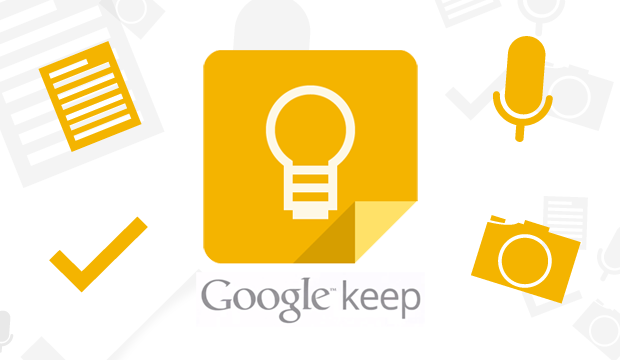
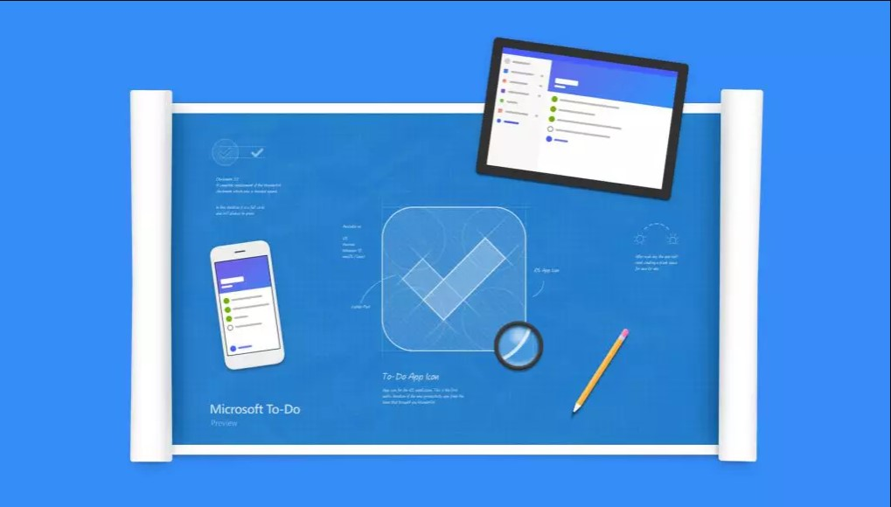
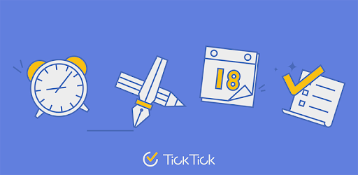

Las Mejores App para Tomar Notas en Android
Si tu eres de esas personas que como yo le encanta tomar notas, hacer listas de tareas, recordatorios...
todo desde tu Android y
que además se sincronize con tu laptop... ¡Este artículo es para tí!
Llevo un buen tiempo investigando varias apps de este estilo, y aquí te muestro las que más me gustaron
y parecieron más utiles.
Google Keep: Menos es más

Me encanta porque con tu cuenta de Google puedes sincronizar los datos de la app con la versión web.
Es la que más uso por su simpleza.
Ventajas:
Vamos, que si quieres hacer una anotación rápida o una nota de voz o la foto de algo, Google
Keep es la mejor opción.
¡Nisiquiera debes preocuparte por guardarlas, ya que lo hacen solas!
Entre sus cualidades están:
- Uso de etiquetas
- Recordarios
- Widgets
- Notas de colores
- Poder crear notas de voz, agregar casillas de verificación, agregar imágenes
- Compartir tus notas
Vamos, que puedes tener tu lista de la compra ahí y la puedes compartirla con tu
pareja o quien quieras.
Y como se esperaba por ser de Google es gratis.
Desventajas:
Lo que no me gusta es que no puedes combinar por ejemplo las casillas de verificación con texto
normal y tampoco tiene opción de negritas.
Eso sin mencionar que como está más orientado a la toma de notas, no tiene opciones mas
complejas como lo es crear listas o alguna vista de
agenda o calendario.
Microsoft: To Do

La alternativa de Microsoft. Puedo decir que cuenta con muchas más funciones que Google Keep.
Esta enfocada principalemente en listas de tareas complejas.
Cualidades:
- Poder crear listas o proyectos
- Posibilidad de agregar subtareas, notas y archivos en cada tarea
- Fondos de colores o imagenes dentro de la aplicación
- Cuenta con una aplicación de escritorio, por lo tanto se sincroniza
- Vista de tareas de hoy, esta semana y proximamente
- Compartir tus notas
Vamos, que puedes crear un proyecto y compartirlo con tus colaboradores.
Desventajas:
Falta una vista de calendario o agenda. Tampoco se le puede agregar estilos al texto como negritas o
cursiva.
Tampoco se le puede poner fecha de vencimiento a una subtarea.
Aún así, es una excelente opción.
Y ahora la que es para mí de las más completas en todos los aspectos:
Tick Tick

Como bien lo dice su lema: Stay Organized Stay Creative
Esta plataforma te da todo para hacerlo.
Entre sus numerosas caracteristicas están:
- Ya sea que haya una tarea relacionada con el trabajo o un objetivo personal, TickTick está aquí
para ayudarle a administrar todos sus tareas pendientes.
- Recordatorios en cualquier momento y cualquier lugar
- Vistas Flexibles de calendario
- Etiquetas y Prioridades
- Listas inteligentes
- Poder hacer seguimiento de hábitos
En verdad que está plataforma es muy completa, pero a diferencia de las demás, esta si es de paga.
Tiene su forma free, pero para Poder
sacarle más provecho, se debe pagar una suscripción. Aún así, para un uso intermedio es más que
perfecta.
Y a ti... ¿Cuál te gustó más?